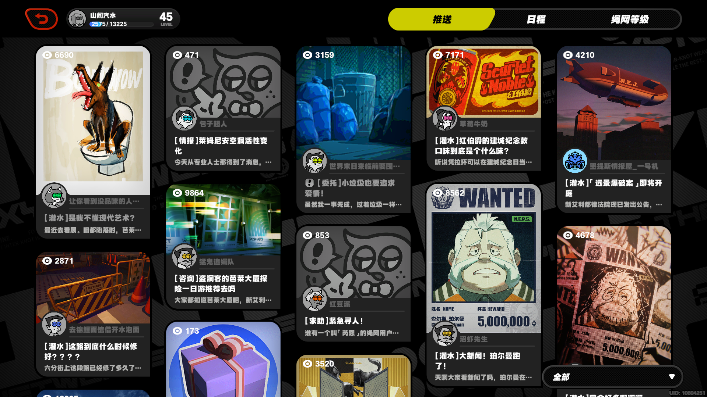
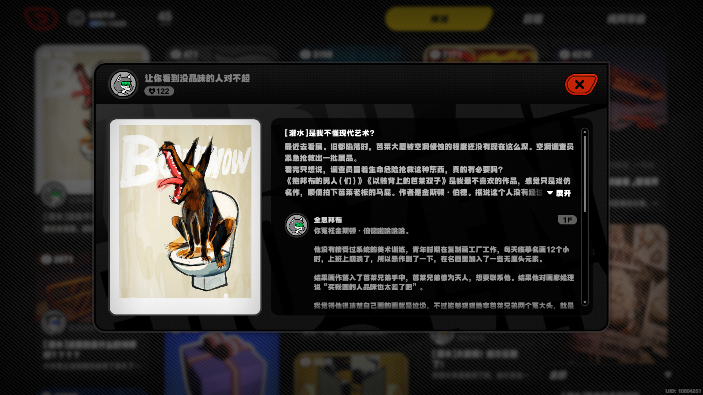
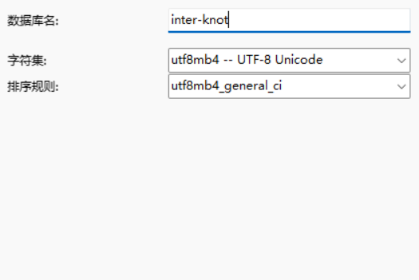

# 前言
看到 b 站有 up 做了个绳网，基于 github 的
感觉自己也可以动手做一个
# 过程
# 服务器
- 购买 阿里云服务器
- 连接 xshell（免费版）通过阿里云下载的密钥 xxx.pem
# 安装 jdk
yum -y install lrzsz 失败，一直 killed，遂用离线安装
（一直爆 killed 是因为内存不够，只有 0.5G，后来配置改（降？）到 1G 就暂时没问题了）
// 下载安装包
$ wget https://ohse.de/uwe/releases/lrzsz-0.12.20.tar.gz //来自lrzsz官网
$ tar -zxvf lrzsz-0.12.20.tar.gz
$ cd lrzsz-0.12.20
// 编译
$ ./configure –prefix=/usr/local/lrzsz
$ make
$ make install
// 建立软连接
$ ln -s /usr/local/lrzsz/bin/lrz /usr/bin/rz
$ ln -s /usr/local/lrzsz/bin/lsz /usr/bin/sz
传输 jdk
rz -be // 避免乱码
解压
tar -zxvf jdk-8u331-linux-x64.tar.gz
配置环境变量
[root@iZj6cac8jcykj0uvk65o5oZ usr]# cd ..
[root@iZj6cac8jcykj0uvk65o5oZ /]# cd /etc/
[root@iZj6cac8jcykj0uvk65o5oZ etc]# vim profile
# i 编辑
# ：wq 保存
# 末尾加上如下
export JAVA_HOME=/usr/jdk-21.0.4 # 版本
export CLASSPATH=$JAVA_HOME/lib/
export PATH=$PATH:$JAVA_HOME/bin
export PATHJAVA_HOME CLASSPATH
# 修改完后，使之生效
source /etc/profile
# 查看是否生效
java -version
# 下载 MySql
# 创建目录
# 获取下载yum源
wget 'https://dev.mysql.com/get/mysql57-community-release-el7-11.noarch.rpm'
# 安装
rpm -Uvh mysql57-community-release-el7-11.noarch.rpm
# 查看拥有的mysql
yum repolist all | grep mysql
# 安装mysql
yum install -y mysql-community-server
# Error:GPG check FAILED
yum install -y mysql-community-server --nogpgcheck
# 启动
systemctl start mysqld
systemctl status mysqld
# 生成临时密码
grep 'temporary password' /var/log/mysqld.log
# 登陆
mysql -u root -p
# 修改密码
UPDATE mysql.user SET authentication_string=PASSWORD('your_new_password') WHERE User='root';
# You must reset your password using ALTER USER statement before executing this statement.
ALTER USER 'root'@'localhost' IDENTIFIED BY 'CCCChen@@@@29';
# 打开权限 让本地能连接上阿里云
mysql> UPDATE mysql.user SET host = '%' WHERE user='root';
# 进行刷新
mysql> FLUSH PRIVILEGES;
阿里云安全组编辑
加上自己 ip 或者 对全部源开放
# 部署 SpringBoot 项目试运行
配置
<packaging>jar<packaging>,server.port:8080打包（jar），maven package
上传
rz，卡住就把 jar 包压缩运行
java -jar ***.jarnohup java -jar ***.jar & //使用下面的方法让这个项目在服务器上自动不间断地跑.
# 设计
# 前端页面
# 主页面
- 瀑布流（？）
- 分页（？）加载

# 文章详情页面
- 点 空白处 或者 关闭键 即可返回
- 委托内容折叠（展开）
- 委托人 + 浏览量、封面、评论

- 按钮动效
- 评论、委托到底
# 登陆 / 注册页面
……
# 留言
# 数据库

# 表
create table user
(
user_id int auto_increment,
user_name varchar(255) default 'ShengJiang' not null,
user_email varchar(255) not null,
user_pwd varchar(255) not null,
registration_date datetime default CURRENT_TIMESTAMP not null,
grade int default 1 not null,
version int default 1 not null,
is_deleted int default 0 not null,
primary key (user_id, is_deleted),
constraint user_email
unique (user_email)
);
create table post
(
post_id int auto_increment
primary key,
title varchar(255) not null,
content text not null,
publish_date datetime default CURRENT_TIMESTAMP not null,
user_id int not null,
cover_id int null,
version int default 1 not null,
is_deleted int default 0 not null,
constraint fk_user_id
foreign key (user_id) references user (user_id)
);
create table comment
(
comment_id int auto_increment
primary key,
content text not null,
comment_date datetime default CURRENT_TIMESTAMP not null,
user_id int not null,
post_id int not null,
version int default 1 not null,
is_deleted int default 0 not null,
constraint fk_post
foreign key (post_id) references post (post_id),
constraint fk_user
foreign key (user_id) references user (user_id)
);
# Reids
...
# 后端
spring boot 3.3.2
# 框架搭建
...
# 依赖导入
# TO DO 需求分析
登陆 / 注册
- 邮箱登陆
- 校验方式
- 密码加密
委托发布
- markdown 格式 （存储方式）
- 加上 浏览量，点赞量 字段
- 委托能否存在 redis （内存是否够）
评论
好友功能
...
等级功能
...
审核
- 风纪委员
- 过滤器 / 拦截器
ect
# 参考
保姆级教程 —— 将 springboot 项目部署到阿里云服务器（小白包会）_怎么把框架项目放到阿里云公网上 - CSDN 博客
保姆级级教程 —— 将 springboot+vue 前后端分离项目部署到阿里云服务器（包教包会）2023 年最新版_前后端分离如何部署阿里服务器 - CSDN 博客
linux tar 解压命令总结 - CSDN 博客